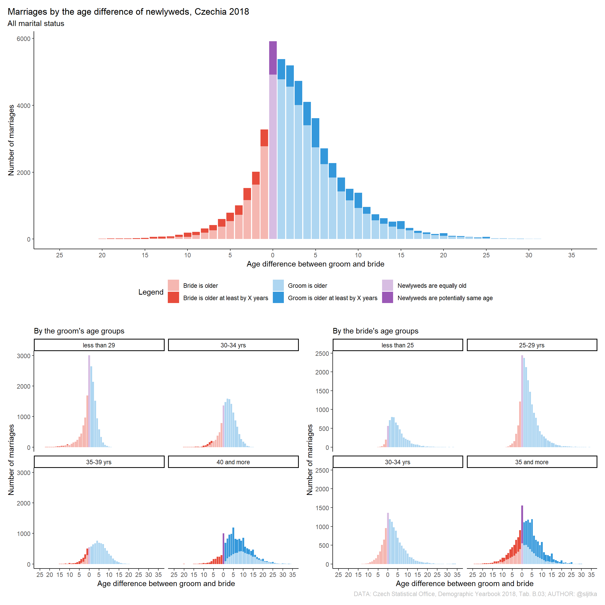

Jak již bylo zmíněno v úvodu, eRko je moje aktuální velká vášeň. Začala jsem psát učební text na téma úvod do R pro demografy (v češtině). Uvidíme jak to dopadne, první kapitola je aktuálně v recenzi u Aničky Altové. Zároveň by tato záložka měla být vhodným odpadkovým košem pro veškerou moji R-prokrastinaci.
Na základě dat z Demografické ročenky pro rok 2018 zde vizualizuji vzájemný věk snoubenců při sňatku. Lze pozorovat, že novomanželé byly nejčastěji stejného nebo alespoň podobného věku. Zohlednímeli věk něvesty, pak podíl starších partnerů s rostoucím věkem nevěsty klesá. Oproti tomu starší svobodní muži si berou častěji mladší parnerky než jejich mladší kolegové. Nic nového pod sluncem. V případě, že chcete tento graf samostatně vytvořit, pak si stačí stáhnout příslušnou tabulku ze stránek ČSÚ a použít kód níže.
library(readxl)
library(tidyverse)
df2018all <- read_excel("erko/R1/13006719rb03.xlsx", sheet = "A", skip = 3) %>%
select(-...2) %>% filter(...1 < 65 & ...1 > 15 | ...1 == "65+") %>%
slice(1:50) %>%
pivot_longer(cols = `16`:`65+`, names_to = "BrideAge", values_to = "Marriages" ) %>% mutate(GroomAge = ...1) %>%
select(GroomAge,BrideAge,Marriages)
df2018 <- df2018all %>%
mutate(Marriages = ifelse(Marriages == '-',0,Marriages))
df2018[is.na(df2018)] = 0
df2018 <- df2018 %>% mutate(BrideWiderInterval = ifelse(BrideAge == "65+",1 ,
ifelse(BrideAge == "45+",1,
ifelse(BrideAge == '60-64',1,
ifelse(BrideAge == '55-59',1,
ifelse(BrideAge == '50-54',1,
ifelse(BrideAge == '45-49',1,
ifelse(BrideAge == '40-44',1,0))))))),
GroomWiderInterval = ifelse(GroomAge == "65+",1 ,
ifelse(GroomAge == "45+",1,0))) %>%
mutate(BrideAge = ifelse(BrideAge == "65+",65 ,
ifelse(BrideAge == "45+",45,
ifelse(BrideAge == '60-64',60,
ifelse(BrideAge == '55-59',55,
ifelse(BrideAge == '50-54',50,
ifelse(BrideAge == '45-49',45,
ifelse(BrideAge == '40-44',40,BrideAge))))))),
GroomAge = ifelse(GroomAge == "65+",65 ,
ifelse(GroomAge == "45+",45,GroomAge)))
df2018 <- df2018 %>% mutate(GroomAge = as.numeric(GroomAge),
BrideAge = as.numeric(BrideAge),
Marriages = as.numeric(Marriages))
df2018 <- df2018 %>%
mutate(DiffAgeMarriages = GroomAge - BrideAge,
WideIntervals = ifelse(GroomWiderInterval == '0',
ifelse(BrideWiderInterval == '0', 'OneYearInterval' , 'WiderInterval'),
'WiderInterval'))
library(ggplot2)
df2018 <- df2018 %>% mutate(Legend = ifelse(DiffAgeMarriages > 0 & WideIntervals == 'OneYearInterval', "Groom is older",
ifelse(DiffAgeMarriages == 0 & WideIntervals == 'OneYearInterval', "Newlyweds are equally old",
ifelse(DiffAgeMarriages < 0 & WideIntervals == 'OneYearInterval', "Bride is older",
ifelse(DiffAgeMarriages > 0 & WideIntervals == 'WiderInterval', "Groom is older at least by X years",
ifelse(DiffAgeMarriages == 0 & WideIntervals == 'WiderInterval', "Newlyweds are potentially same age",
ifelse(DiffAgeMarriages < 0 & WideIntervals == 'WiderInterval', "Bride is older at least by X years", "-")))))))
cols <- c("Groom is older" = "#AED6F1",
"Newlyweds are equally old" = "#D7BDE2",
"Bride is older" = "#F5B7B1",
"Groom is older at least by X years" = "#3498DB",
"Newlyweds are potentially same age" = "#9B59B6",
"Bride is older at least by X years" = "#E74C3C")
g1 <- ggplot(df2018, aes(x = DiffAgeMarriages, y = Marriages, fill = Legend)) +
geom_col(position = position_stack(reverse = TRUE)) +
scale_fill_manual(values = cols) +
scale_x_continuous(limits = (c(-25,35)), breaks = seq(-25,35,5), labels = abs(seq(-25,35,5))) +
theme_classic() +
ggtitle("Marriages by the age difference of newlyweds, Czechia 2018", subtitle = "All marital status") +
xlab("Age difference between groom and bride") +
ylab("Number of marriages") +
theme(legend.position = "bottom", plot.caption = element_text(colour = "gray"), plot.title.position = "plot")
df2018 <- df2018 %>% mutate(GroomAgeCat = cut(GroomAge, breaks=c(0, 30, 35, 40, 70), right = FALSE,
labels = c("less than 29","30-34 yrs", "35-39 yrs", "40 and more"))) %>%
mutate(BrideAgeCat = cut(BrideAge, breaks=c(0, 25, 30, 35, 70), right = FALSE,
labels = c("less than 25", "25-29 yrs","30-34 yrs", "35 and more")))
g2 <- ggplot(df2018, aes(x = DiffAgeMarriages, y = Marriages, fill = Legend)) +
geom_col(position = position_stack(reverse = TRUE)) +
scale_fill_manual(values = cols) +
scale_x_continuous(limits = (c(-25,35)), breaks = seq(-25,35,5), labels = abs(seq(-25,35,5))) +
theme_classic() +
ggtitle("", subtitle = "By the groom's age groups") +
xlab("Age difference between groom and bride") +
ylab("Number of marriages") +
facet_wrap(~GroomAgeCat) +
theme(legend.position = "none", plot.caption = element_text(colour = "gray"))
g3 <- ggplot(df2018, aes(x = DiffAgeMarriages, y = Marriages, fill = Legend)) +
geom_col(position = position_stack(reverse = TRUE)) +
scale_fill_manual(values = cols) +
scale_x_continuous(limits = (c(-25,35)), breaks = seq(-25,35,5), labels = abs(seq(-25,35,5))) +
theme_classic() +
ggtitle("",subtitle = "By the bride's age groups") +
xlab("Age difference between groom and bride") +
ylab("Number of marriages") +
facet_wrap(~BrideAgeCat) +
theme(legend.position = "none", plot.caption = element_text(colour = "gray")) +
labs(fill="", caption = "DATA: Czech Statistical Office, Demographic Yearbook 2018, Tab. B.03; AUTHOR: @sljitka")
library(patchwork)
g1/(g2 + g3) 